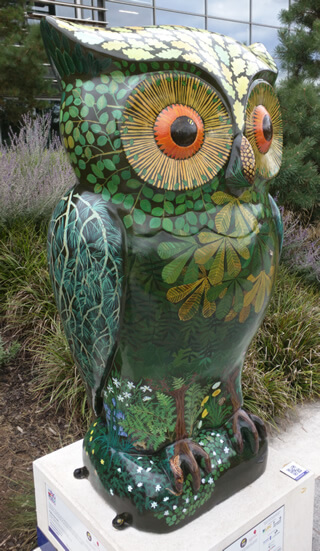

This is a single page showing some more advanced uses of Pin the Web, with RDFa metatags and the Open Graph vocabulary. You can see other examples at our Basic landing page and Pin the Web full site pages.
You can find out more at Pin the Web on MDN.
Favicon by Dawghouse Design Studio, hosted on findicons.com.
This is my sample article. I am sure you'll enjoy pinning it as it is very useful. It even includes an image of an Owl.
